Getting Started#
Launching BuckPy using the pip install Package#
Set up a virtual environment and install BuckPy (first time only):
Create a folder for the virtual environment:
This is where BuckPy and its dependencies will be installed.
You can create it anywhere, for instance C:\BuckPy.
This folder will be referred to as the BuckPy directory in the following steps.
Open a windows terminal in this folder and create a virtual environment:
$ python -m venv .venvInstall BuckPy using pip (Python >=3.9 and <=3.12):
$ pip install buckpyNotes:
BuckPy can be installed and run by anyone using pip install buckpy, regardless of whether they have access to the private BuckPy repository.
Installing BuckPy inside the virtual environment is important. Installing it globally may interfere with other Python scripts or libraries already on your system.
Activate the virtual environment and launch BuckPy (for each session):
Open a windows terminal in the directory where BuckPy was installed and activate the virtual environment [This command works in the VSCode’s PowerShell. Command may vary in other shells]:
$ .\.venv\Scripts\activateTo launch BuckPy, run the following command in the terminal:
$ buckpy
Launching BuckPy using the Source Code#
Before running BuckPy for first time using the source code, follow these steps to activate a virtual environment from the REQUIREMENTS.TXT file:
Open a Command Prompt or PowerShell and navigate to the folder where BuckPy is cloned.
To create the virtual environment, run:
$ python -m venv envTo activate the virtual environement, run [This command works in the VSCode’s PowerShell. Command may vary in other shells]:
$ .\.venv\Scripts\activateTo install the necessary libraries, run:
$ pip install -r ./REQUIREMENTS.txtTo run BuckPy, execute:
$ python -m buckpyAfterwards, before running BuckPy following Step 5, simply activate the virtual environment using the command in Step 3.
How to Start a Simulation?#
Create a working directory:
This is a dedicated folder where all input and output files for your simulations will be stored.
You can create it anywhere on your computer.
This folder will be referred to as the working directory in the following steps.
Add the Excel input file(s):
Save in this folder the Excel input file with the design data required to run BuckPy.
As a good starting point, use an example from the examples folder in the BuckPy Repository.
All output files and figures generated during the simulation will be saved in this directory.
Launch BuckPy following the steps in the section: Launching BuckPy using the pip install Package or Launching BuckPy using the Source Code.
The BuckPy graphical user interface (GUI) will open:
From here, you can go to the working directory and select the Excel input file, and configure the simulation parameters.
For additional details, visit the section: How to Modify the Design Data?
How to Modify the Design Data?#
Data to be Modified in the GUI#
The following variables have to be updated in the GUI:
Select Excel input file: A dialog will open to select the Excel input file. The output file and plot will also be stored in this directory.
Pipeline ID: Pipeline of the input file to be analysed.
Scenario ID: Pipeline scenario or sensitivity to be analysed. Multiple scenarios can be defined and will be run in a batch process (comma-separated).
Enable verbose output: True or False flag to select whether the information on how the script progresses needs to be printed out in the terminal.
Extract extended results: True or False flat to select whether extended results need to be extracted. This functionally is still under development and it can slow down the simulation significantly.
Run all scnarios: Press this button to run all the selected scenarios.
The following image has been taken from the GUI of buckpy.py to illustrate how the previous variables actually look in the script:
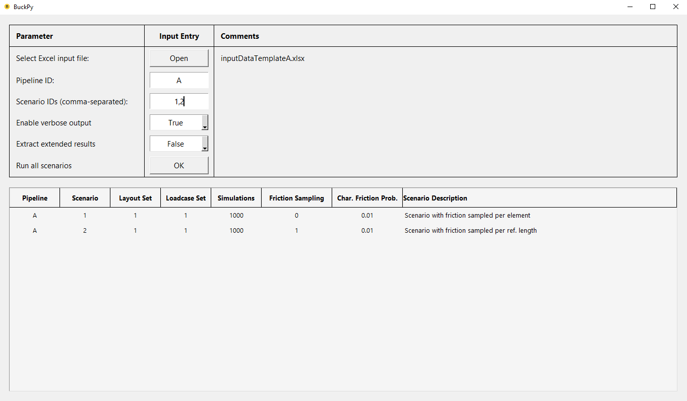
Data to be Modified in the inputFileTemplate.xlsx#
The Excel file provided in the repository (
inputFileTemplate.xlsx) contains a design data template of the information required to run BuckPy. The template information then has to be replaced by the project specific data. The design data template Excel file has the following tabs:
Scenario: Different scenarios (or sensitivities) can defined in this tab. Different pipelines, routes, pipe properties, operating properties and number of simulations can be defined for each scenario. Each scenario needs to be defined in a new row. There is no limit in the number of scenarios that can be defined.
Pipeline: The identifier of the pipeline.
Scenario: The identifier of the scenario.
Layout Set: The identifier of the layout set.
Loadcase Set: The identifier of the loadcase set.
Simulations: The number of simulations.
Friction Sampling: The method for sampling the lateral breakout friction factor (i.e. 0 ‘per Element’ or 1 ‘per OOS Reference Length’).
Char. Friction Prob.: The probability of exceedance among the lateral breakout friction factors.
Scenario Description: The description of each simulation scenario.
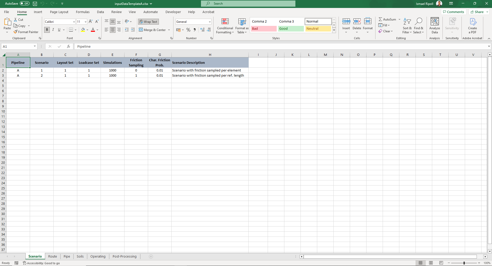
Route: Different route layout sets are defined in this tab. Multiple sections can be defined (Spool, Straight, Bend, Sleeper or RCM) per route layout. Different pipe properties, friction factors, HOOS factors and residual buckle force and length can be defined for each section. Routes can be grouped by pipelines (multiple pipelines can be defined).
Pipeline: The identifier of the pipeline.
Layout Set: The identifier of the layout set.
Pipe Set: The identifier of the pipeline set.
Friction Set: The identifier of the friction set.
Route Type: If Point ID From or Point ID To is Start or End, the available route types are Spool and Fixed. Elsewhere, the available route types are Straight, Bend, Sleeper and RCM.
Point ID From: The identifier of the start of the pipeline section.
Point ID To: The identifier of the end of the pipeline section.
KP From: The KP of the start of the pipeline section in the unit of m.
KP To: The KP of the end of the pipeline section in the unit of m.
Bend Radius: The radius of the pipeline section with route type of ‘Bend’ in the unit of m.
Sleeper Height: The height of the sleeper of the pipeline section with route type of ‘Sleeper’.
RCM Buckling Force: The mean of buckling force of the pipeline section with residual curvature.
HOOS Mean: The mean of the HOOS distribution. When the route type is RCM, the HOOS mean needs to be equal to 1.0.
HOOS STD: The standard deviation of the HOOS distribution. When the route type is RCM, HOOS STD needs to be equal to the coefficient of variation (COV) of the CBF, where the COV is defined as the ratio between the STD and the mean of the CBF.
HOOS Reference Length: The reference length of the HOOS distribution in the unit of m.
Residual Buckle Force Hydrotest: The residual buckling force during hydrotest in the unit of N.
Residual Buckle Length Hydrotest: The residual buckling length during hydrotest in the unit of m.
Residual Buckle Force Operation: The residual buckling force during operation in the unit of N.
Residual Buckle Length Operation: The residual buckling length during operation in the unit of m.
Reaction Installation: The reaction force during installation in the unit of N. The sign convention is that all forces are compression positive and tension negative.
Reaction Hydrotest: The reaction force during hydrotest in the unit of N.
Reaction Operation: The reaction force during operation in the unit of N.
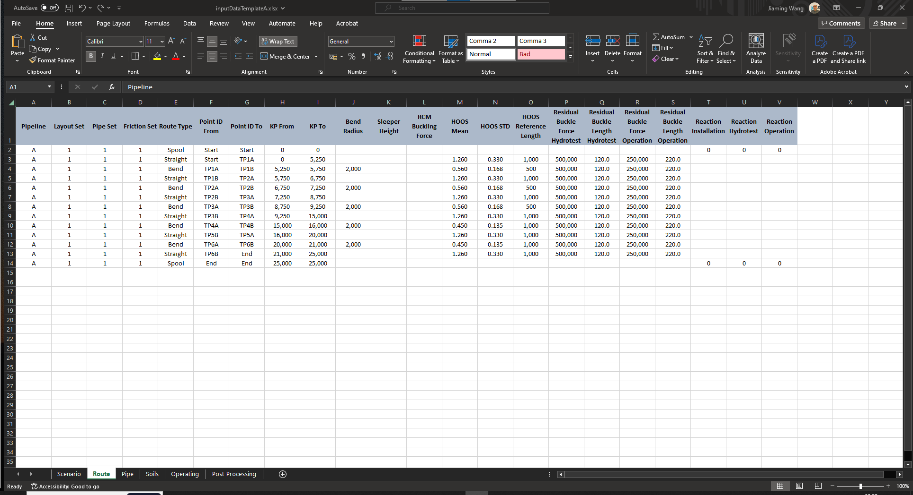
Pipe: Different pipe properties are defined in this tab. Pipe properties are grouped by pipelines and pipe sets (multiple pipe sets can be defined per pipeline).
Pipeline: The identifier of the pipeline.
Pipe Set: The identifier of the pipeline set.
OD: The outer diameter in the unit of m.
WT: The wall thickness in the unit of m.
E: The Young’s modulus in the unit of Pa.
Poisson: The Poisson ratio.
Alpha: The thermal expansion.
sw Empty: The submerged weight for the empty pipeline in the unit of N/m.
sw Installation: The submerged weight during installation in the unit of N/m.
sw Hydrotest: The submerged weight during hydrotest in the unit of N/m.
sw Operation: The submerged weight during operation in the unit of N/m.
Pipe Description: The description of the pipeline material properties.
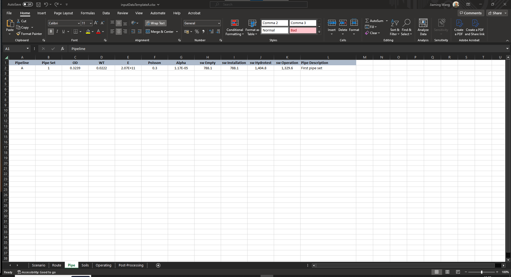
Soils: The LE(P95), BE(P50), and HE(P5) of the axial residual and lateral breakout friction factors are defined in this tab. Different lateral breakout friction factors can be specified for hydrotest and operating conditions. For each friction factor, the bounds used to determine the lognormal fit are defined (LE_BE, BE_HE or LE_BE_HE). Using any of the three bound combinations, BuckPy calculates the mean and standard deviation (STD) of the lognormal fit that minimises the root-mean-square error (RMSE). Friction factors can be grouped also by pipeline and friction set.
Pipeline: The identifier of the pipeline.
Friction Set: The identifier of the friction set.
Axial LE: LE of the axial friction factor, assumed to have a 95% probability of exceedance (P95).
Axial BE: BE of the axial friction factor, assumed to have a 50% probability of exceedance (P50).
Axial HE: HE of the axial friction factor, assumed to have a 5% probability of exceedance (P5).
Axial Fit Bounds: The bounds used to determine the lognormal fit for the axial friction factor (LE_BE, BE_HE or LE_BE_HE).
Lateral Hydrotest LE: LE of the lateral hydrotest friction factor (P95).
Lateral Hydrotest BE: BE of the lateral hydrotest friction factor (P50).
Lateral Hydrotest HE: HE of the lateral hydrotest friction factor (P5).
Lateral Hydrotest Fit Bounds: The bounds used to determine the lognormal fit for the lateral hydrotest friction factor (LE_BE, BE_HE or LE_BE_HE).
Lateral Operation LE: LE of the lateral operation friction factor (P95).
Lateral Operation BE: BE of the lateral operation friction factor (P50).
Lateral Operation HE: HE of the lateral operation friction factor (P5).
Lateral Operation Fit Bounds: The bounds used to determine the lognormal fit for the lateral operation friction factor (LE_BE, BE_HE or LE_BE_HE).
Soil Description: The description of the soil friction properties.
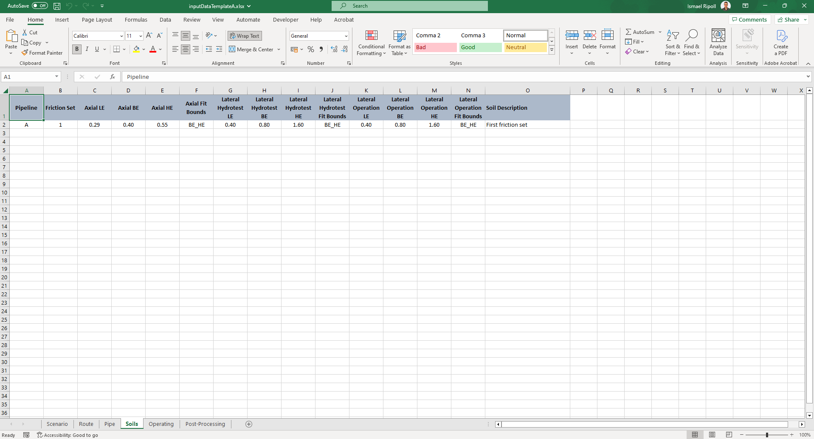
Operating: Installation, hydrotest and operating pressures and temperatures and RLT are specified in this tab. This tab in turn is used to define the KPs (or elements) in which the pressure, temperature and RLT will be interpolated. Operating conditions can be grouped by pipeline and loadcase set.
Pipeline: The identifier of the pipeline.
Loadcase Set: The identifier of the loadcase set.
KP: The Kilometer Point in the unit of m.
Pressure Installation: The pressure during installation in the unit of Pa.
Pressure Hydrotest: The pressure during hydrotest in the unit of Pa.
Pressure Operation: The pressure during operation in the unit of Pa.
Temperature Installation: The temperature during installation in the unit of Celsius Degree.
Temperature Hydrotest: The temperature during hydrotest in the unit of Celsius Degree.
Temperature Operation: The temperature during operation in the unit of Celsius Degree.
RLT: The Residual Lay Tension in the unit of N (Negative Value).
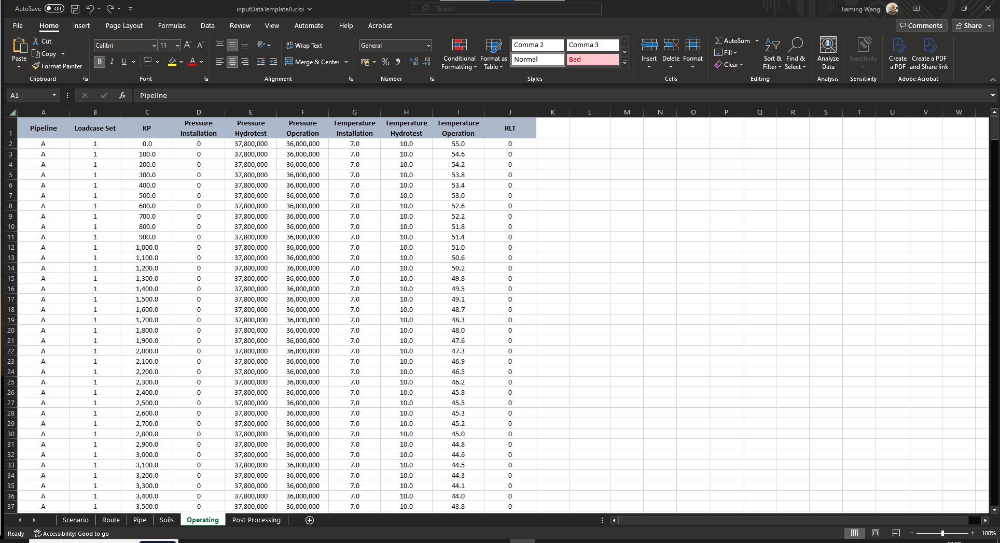
Post-Processing: This tab defines the sets that will be used by BuckPy to define the characteristic VAS and friction along the pipeline route. Post-processing sets can be grouped by pipeline and layout sets (route sets).
Pipeline: The identifier of the pipeline.
Layout Set: The identifier of the layout set.
Post-Processing Set: The identifier of the post-processing set.
KP From: The KP of the start of the pipeline section in the unit of m.
KP To: The KP of the end of the pipeline section in the unit of m.
Characteristic VAS Probability: The probability of exceeding characteristic VAS.
Post-Processing Description: The description of the post-processing sets.
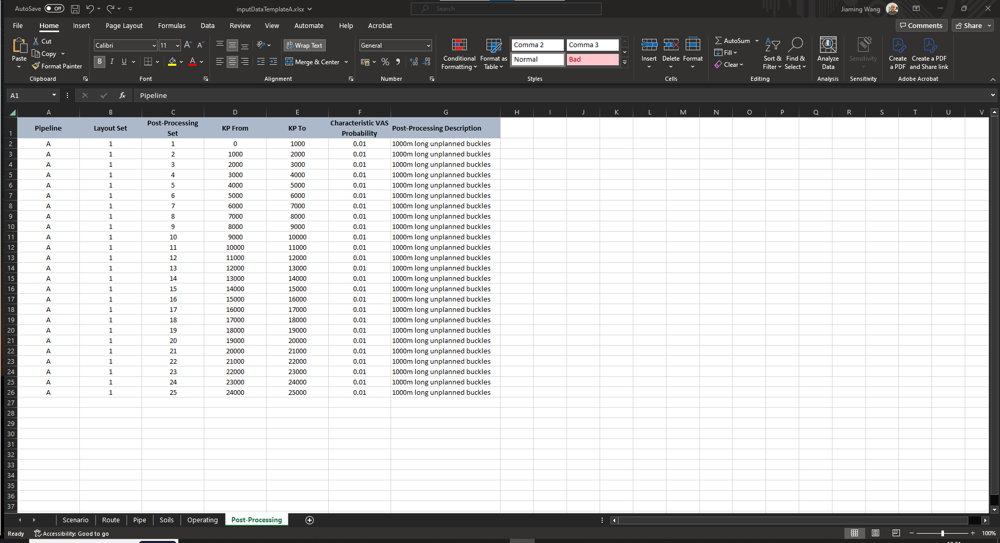
Which Output Data is Generated by BuckPy?#
Output Excel file#
The name of the output Excel file will follow the convention
{INPUT_FILE_NAME}_{PIPELINE_ID}_scen{SCENARIO_ID}_outputs.xlsx. For instance,inputFileTemplate_A_scen1_outputs.xlsx. The output Excel file has the following tabs:
Elements: This tab contains the probability of buckling, stochastic VAS and lateral friction factor outputs. It also contains the Characteristic VAS and Friction of the Buckles. This information is grouped by based on the KP (elements) of the Operating tab of the template excel file.
Centroid of the Element (m): The KP value of the element centroid in the unit of m.
Number of Simulations with a Buckle: The number of simulations with a buckle.
Probability of Buckling: The probability of buckling in the simulation.
Probability of not Buckling: The probability of not buckling in the simulation.
Mean of the VAS (m): The mean of the VAS in the unit of m.
Standard Deviation of the VAS (m): The standard deviation of the VAS in the unit of m.
Minimum VAS (m): The minimum of the VAS in the unit of m.
Maximum VAS (m): The Maximum of the VAS in the unit of m.
Mean of the Lateral Breakout Friction: The mean of the lateral breakout friction factor.
Standard Deviation of the Lateral Breakout Friction: The standard deviation of the lateral breakout friction factor.
Minimum Lateral Breakout Friction: The minimum of the lateral breakout friction factor.
Maximum Lateral Breakout Friction: The maximum of the lateral breakout friction factor.
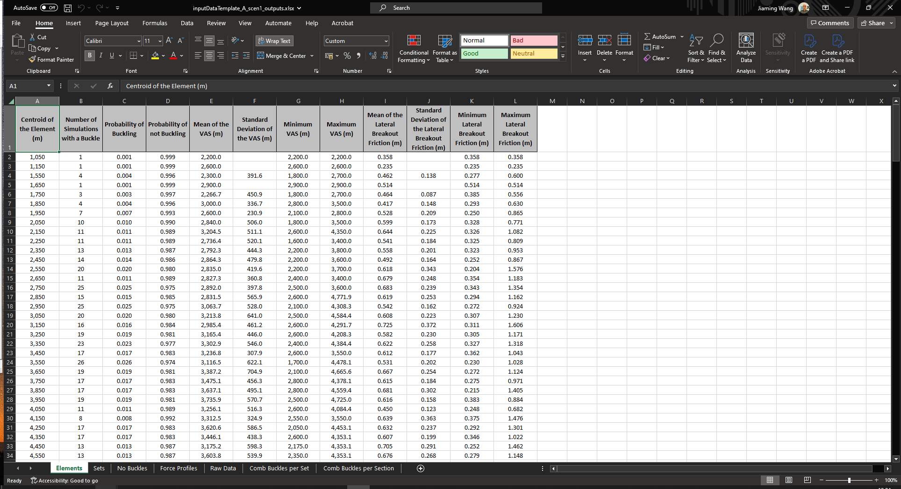
Sets: This tab contains the probability of buckling, and stochastic VAS and lateral friction factor outputs. It also contains the Characteristic VAS and Friction of the Buckles. This information is grouped by based on the Post-Processing Set of the Post-Processing tab of the input excel file.
Set Label: The identifier of the post-processing set.
KP From (m): The KP of the start of the pipeline section in the unit of m.
KP To (m): The KP of the end of the pipeline section in the unit of m.
Number of Simulations with Buckles per Set: The number of simulations with buckles in each set.
Number of Buckles per Set: The number of buckles in each set.
Probability of Buckling: The probability of buckling in the set.
Probability of not Buckling: The probability of not buckling in the set.
Mean of the VAS (m): The mean of the VAS in the unit of m.
Standard Deviation of the VAS (m): The standard deviation of the VAS in the unit of m.
Minimum VAS (m): The minimum of the VAS in the unit of m.
Maximum VAS (m): The Maximum of the VAS in the unit of m.
Characteristic VAS Probability: The probabilities of characteristic VAS.
Characteristic VAS, Conditional (m): The conditional characteristic VAS in the unit of m.
Characteristic VAS, Unconditional (m): The unconditional characteristic VAS in the unit of m.
Mean of the Lateral Breakout Friction: The mean of the lateral breakout friction factor.
Standard Deviation of the Lateral Breakout Friction (m): The standard deviation of the lateral breakout friction factor.
Minimum Lateral Breakout Friction (m): The minimum lateral breakout friction factor.
Maximum Lateral Breakout Friction (m): The maximum lateral breakout friction factor.
Characteristic Lateral Breakout Friction Probability: The probabilities of the characteristic lateral breakout friction factor.
Characteristic Lateral Breakout Friction, Buckles: The unconditional characteristic lateral breakout friction factor.
Lateral Breakout Friction, HE, Geotech: The high estimate of the geotechnical lateral breakout friction factor.
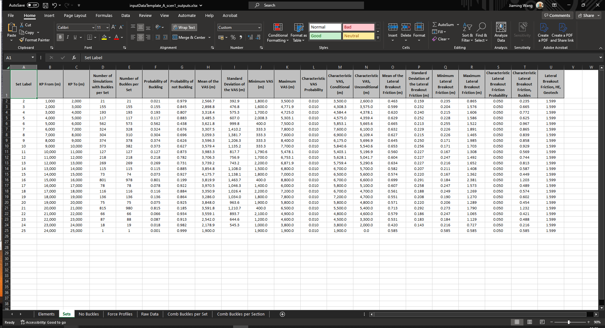
No Buckles: This tab contains the probability distribution of the total number of buckles along the pipeline route.
Number of Buckles: The number of buckles.
Number of Simulations: The number of simulations with buckles.
Probability of Buckling: The probabilities of buckling.
Cumulative Probability of Buckling: The cumulative probabilities of buckling.
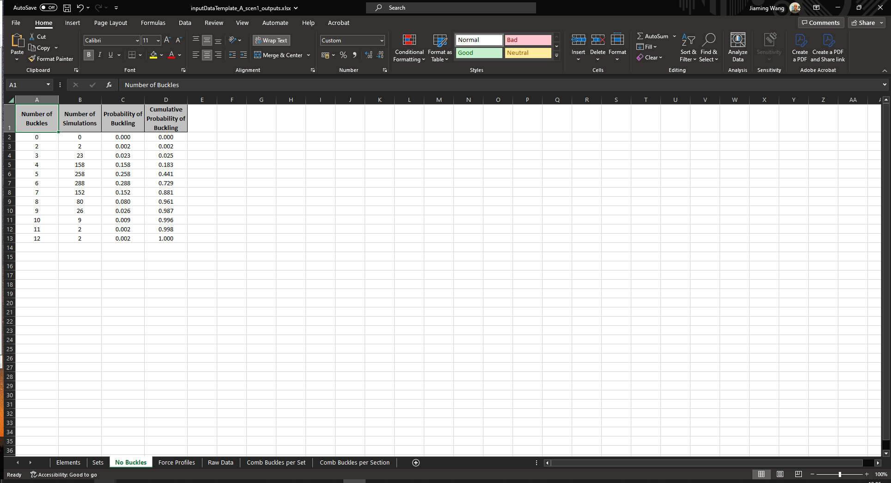
Force Profiles: This tab contains the effective axial force profiles.
KP (m): The KP value of the element centroid in the unit of m.
CBF Hydrotest (kN): The critical buckling force during hydrotest in the unit of kN.
CBF Operation (kN): The critical buckling force during operation in the unit of kN.
EAF Installation [RLT] (kN): The effective axial force during installation in the unit of kN.
EAF Hydrotest (kN): The effective axial force during hydrotest in the unit of kN.
EAF Operation [Pressure Only] (kN): The effective axial force during operation with only pressure applied in the unit of kN.
EAF Operation (kN): The effective axial force during operation in the unit of kN.
EAF Operation [without Buckling] (kN): The effective axial force during operation without buckling in the unit of kN.
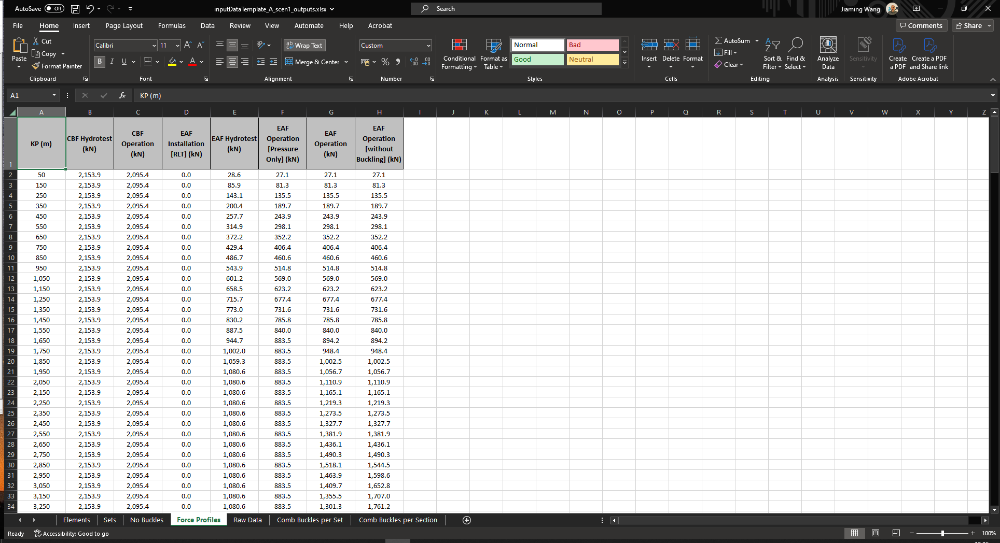
Raw Data: This tab contains stochastic VAS and lateral friction factor outputs from each simulation that has triggered buckles.
Simulation Number: The simulation number with buckles for each KP.
KP (m): The KP value of the element centroid in the unit of m.
Section Type: The types of elements (e.g., Spool, Straight, Bend, Sleeper and RCM).
Axial Residual Friction Factor, Operation: The axial residual friction factor during operation.
Lateral Breakout Friction Factor, Operation: The lateral breakout friction factor during operation.
HOOS Factor: The HOOS friction factor.
CBF Operation (kN): The CBF during operation in the unit of kN.
VAS Operation (m): The VAS during operation in the unit of m.
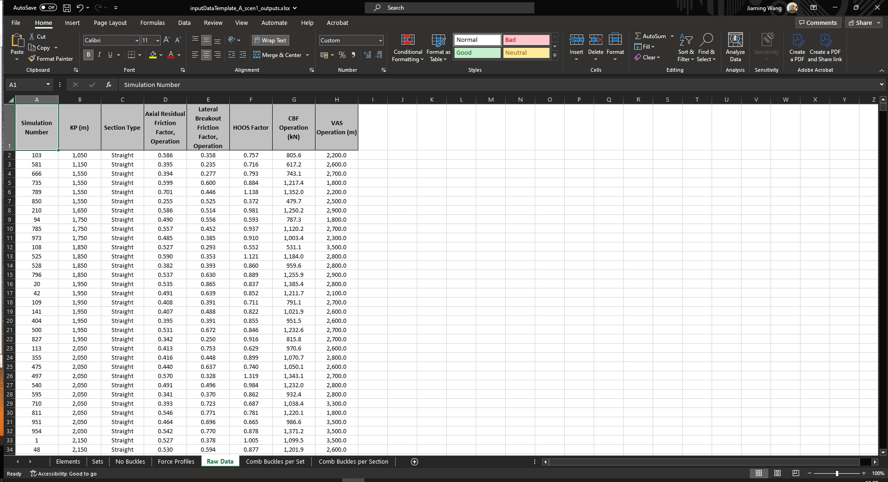
Comb Buckles per Set: This tab contains the probability of the most frequent combinations based on post-processing set that has triggered buckles.
Combination Id: The identifier of the most frequent combination with buckles.
Number of Simulations: The number of simulations for each buckling combination.
Probability of Combination: The probabilities of each buckling combination.
Number of Buckles: The number of buckles for each buckling combination.
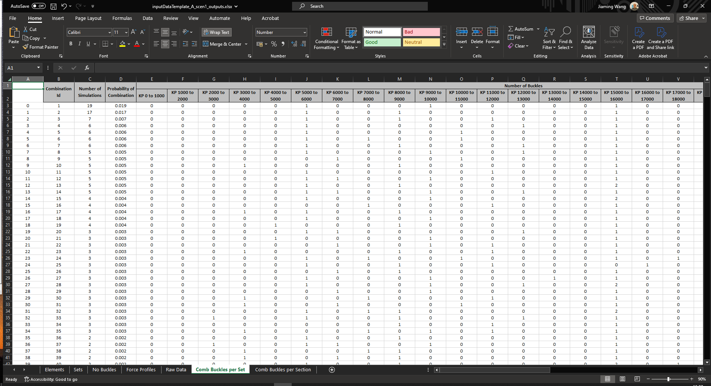
Comb Buckles per Section: This tab contains the probability of the most frequent combinations based on set number of sections in the route data that has triggered buckles.
Combination Id: The identifier of the most frequent combination with buckles.
Number of Simulations: The number of simulations for each buckling combination.
Probability of Combination: The probabilities of each buckling combination.
Number of Buckles: The number of buckles for each buckling combination.
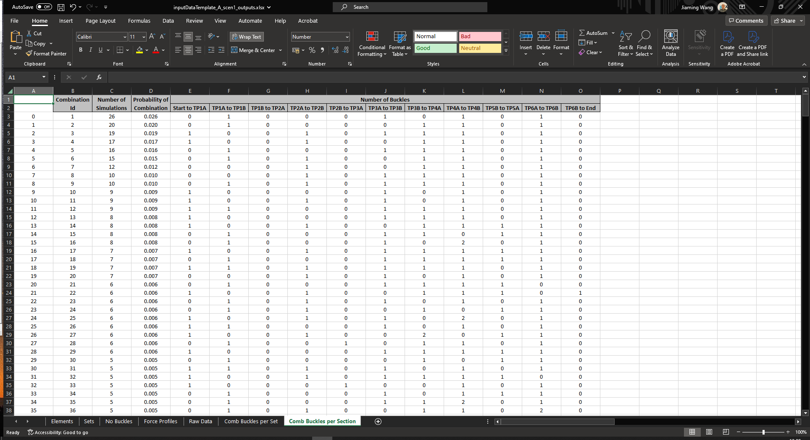
Output Figures#
The name of the two output figures will follow the convention:
{INPUT_FILE_NAME}_{PIPELINE_ID}_scen{SCENARIO_ID}_plots-1.xlsx.
For instance,
inputFileTemplate_A_scen1_plots-1.xlsx.{INPUT_FILE_NAME}_{PIPELINE_ID}_scen{SCENARIO_ID}_plots-2.xlsx.
For instance,
inputFileTemplate_A_scen1_plots-2.xlsx.The first output figure contains the following four subplots:
Upper: This subplot contains the effective axial force profiles of the buckled deterministic case or first buckled random case.
Lower Left: This subplot contains the probability distribution of the total number of buckles along the pipeline route.
Lower Centre: This subplot contains the P5 lateral breakout friction factors of the geotechnical design data distribution and the distribution of the lateral breakout friction factors of the actual buckles that have triggered.
Lower Right: This subplot contains the probabilities of buckling and characteristic VAS.
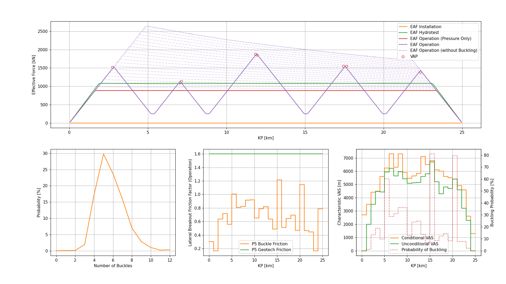
The second output figure contains the following six subplots:
Upper Left: This subplot contains the unbuckled effective axial force profile with the mean axial friction.
Upper Centre: This subplot contains the probabilities of the number of buckles.
Upper Right: This subplot contains the characteristic VAS per kilometre.
Lower Left: This subplot contains the buckled effective axial force profile with the mean axial friction and buckling force.
Lower Centre: This subplot contains the probabilities of buckling per kilometre.
Lower Right: This subplot contains the P5 lateral breakout friction factors of the geotechnical design data distribution and the distribution of the lateral breakout friction factors of the actual buckles that have triggered.
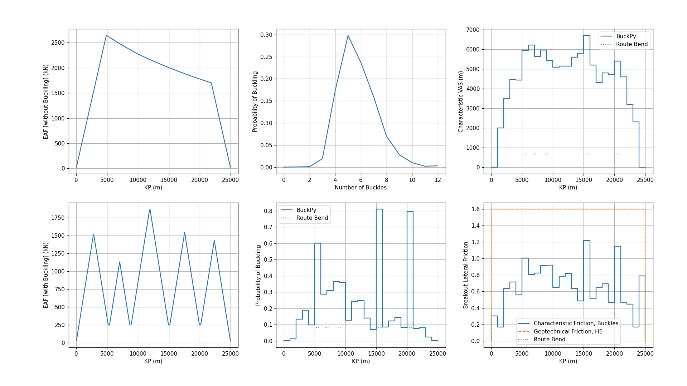
How to Clone BuckPy to become a Maintainer#
To clone the BuckPy Repository to your computer and prepare it for development in VS Code, follow these steps:
Open VS Code.
Press F1 and type
Git: Cloneto open the Git Clone dialog.Paste the repository:
$ git clone https://github.com/Xodus-Group/BuckPy.gitSelect the folder where the repository will be cloned. For example:
$ c:\\BuckPyFollow the steps in the section: Running BuckPy using the Source Code to set up the virtual environment and run BuckPy.
The repository structure is as follows:
buckpy: This folder contains the main application file and core modules:
Initialisation package script
__init__.pyMain script
buckpy.pySupporting modules
buckpy_gui.py
buckpy_preprocessing.py
buckpy_solver.py
buckpy_postprocessing.py
buckpy_variables.py
buckpy_visualisation.pydocs: This folder contains the Sphinx documentation and scripts used to generate Buckfast input and output files from the BuckPy input file. The two Python scripts used to write Buckfast input and output files are located in:
.//docs//_static//buckfast file writers:
buckfast_input_file_writer.py
buckfast_output_file_compiler.pyexamples: This folder contains sample Excel input files for running the BuckPy simulations.
inputDataTemplateA.xlsx: Pipeline with rogue buckles only.
inputDataTemplateB.xlsx: Pipeline with simple sleepers.
inputDataTemplateC.xlsx: Pipeline with RCM route type..gitignore: Specifies files and directories that should be ignored by Git version control.
LICENSE: Contains the GNU General Public License v3.0 under which BuckPy has been released.
README: The main repository description and usage overview.
REQUIREMENTS.txt: Contains the list of Python libraries and their versions required to run BuckPy.
setup.py: The setup script used to package BuckPy for distribution via pip.